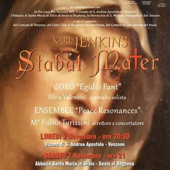

ven 13 nov · dalle 21:00
Stabat Mater di Karl Jenkins
✨ Un'opera di straordinaria intensità emotiva, capace di trasformare il dolore in un messaggio universale di 𝐜𝐨𝐦𝐩𝐚𝐬𝐬𝐢𝐨𝐧𝐞 𝐞 𝐬𝐩𝐞𝐫𝐚𝐧𝐳𝐚: a 𝐒𝐚𝐧 𝐃𝐚𝐧𝐢𝐞𝐥𝐞 𝐝𝐞𝐥 𝐅𝐫𝐢𝐮𝐥𝐢 un appuntamento speciale con la grande musica!
 Indicazioni
Indicazioni
- Costi e prenotazioni
- Costo non indicato · Prenotazione non indicata
- Programma
- Programma da verificare. Apri la fonte ufficiale per orari e possibili aggiornamenti.
- In caso di maltempo
- Nessuna indicazione specifica pubblicata.
- Note
- Acquisito automaticamente dalla fonte.
L’EVENTO
Descrizione completa
🎶 𝐒𝐓𝐀𝐁𝐀𝐓 𝐌𝐀𝐓𝐄𝐑 𝐃𝐈 𝐊𝐀𝐑𝐋 𝐉𝐄𝐍𝐊𝐈𝐍𝐒! 🎶
✨ Un'opera di straordinaria intensità emotiva, capace di trasformare il dolore in un messaggio universale di 𝐜𝐨𝐦𝐩𝐚𝐬𝐬𝐢𝐨𝐧𝐞 𝐞 𝐬𝐩𝐞𝐫𝐚𝐧𝐳𝐚: a 𝐒𝐚𝐧 𝐃𝐚𝐧𝐢𝐞𝐥𝐞 𝐝𝐞𝐥 𝐅𝐫𝐢𝐮𝐥𝐢 un appuntamento speciale con la grande musica!
📅 𝐕𝐄𝐍𝐄𝐑𝐃𝐈' 𝟏𝟑 𝐍𝐎𝐕𝐄𝐌𝐁𝐑𝐄 𝟐𝟎𝟐𝟔 🕘 Ore 𝟐𝟏:𝟎𝟎
📍 𝐒𝐚𝐧𝐭𝐮𝐚𝐫𝐢𝐨 𝐝𝐢 𝐌𝐚𝐝𝐨𝐧𝐧𝐚 𝐝𝐢 𝐒𝐭𝐫𝐚𝐝𝐚 (Via Ciconi)
PRENOTAZIONE ad offerta libera presso Libreria W. Meister & Co (Piazza Vittorio Emanuele II)
🎼 Protagonisti della serata il 𝐂𝐨𝐫𝐨 “𝐄𝐠𝐢𝐝𝐢𝐨 𝐅𝐚𝐧𝐭”, 𝐒𝐢𝐥𝐯𝐢𝐚 𝐕𝐚𝐥𝐞𝐧𝐭𝐢𝐧𝐢, contralto solista, e l'𝐄𝐧𝐬𝐞𝐦𝐛𝐥𝐞 “𝐏𝐞𝐚𝐜𝐞 𝐑𝐞𝐬𝐨𝐧𝐚𝐧𝐜𝐞𝐬”, diretti dal M° 𝐅𝐮𝐥𝐯𝐢𝐨 𝐓𝐮𝐫𝐢𝐬𝐬𝐢𝐧𝐢.
🎵 Un'occasione rara per lasciarsi coinvolgere dalla forza di un'opera che attraversa culture e generazioni, dando voce al dolore e alla speranza.
IL PROGRAMMA
Programma e orari
Appuntamenti raccolti dalle fonti elencate. Dove manca un orario, non è ancora disponibile in questa scheda.
Programma pubblicato
- Dal 2026-11-13 al 2026-11-13
INFORMAZIONI UTILI
Prima di partire
- Controllare la fonte prima di partire.
ORGANIZZAZIONE